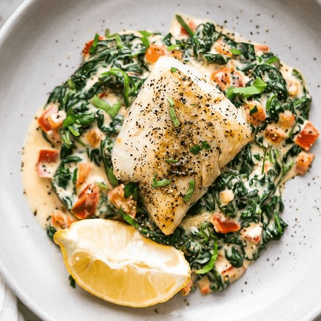
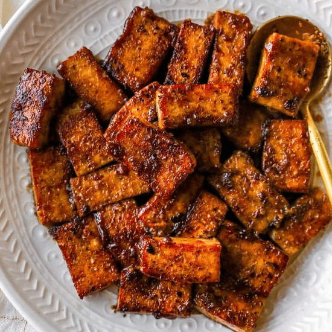

A healthful diet has many and varied health benefits, including a reduced risk of various diseases and health conditions, improved mood, and better memory. A healthful diet typically includes nutrient-dense foods from all major food groups, including lean proteins, whole grains, healthful fats, and fruits and vegetables of many colors. Following a healthful diet has many health benefits, including building strong bones, protecting the heart, preventing disease, and boosting mood.
Foods high in antioxidants include:In addition, children who participate in gardening and cooking at home may be more likely to make healthful dietary and lifestyle choices.
There are plenty of small, positive ways to improve diet, including: